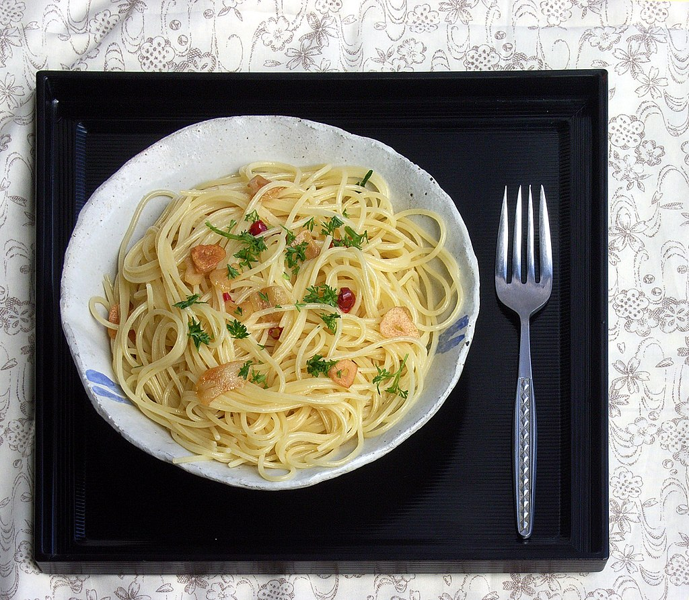

Aglio olio e peperoncino

An easy pasta recipes for a quick launch, with a smoothly spicy taste.
Is often prepared in Rome to have fast but genuine dish
Ingredients for 1 person:
- 100g of spaghetti
- 2 garlic cloves (or more, based on personal taste)
- 1 chili pepper
- A tablespoon of parsley (oreganon may be used if preferred)
- Salt
- Olive oil
Preparation
- Bring a large pot of salted water to boil
- Throw the pasta into the boiling water
- Sauté the garlic in a saucepan with the oil, parsley and chopped chilli, until the garlic is golden
- When the pasta is ready add the sauté and mix
Back to recipes